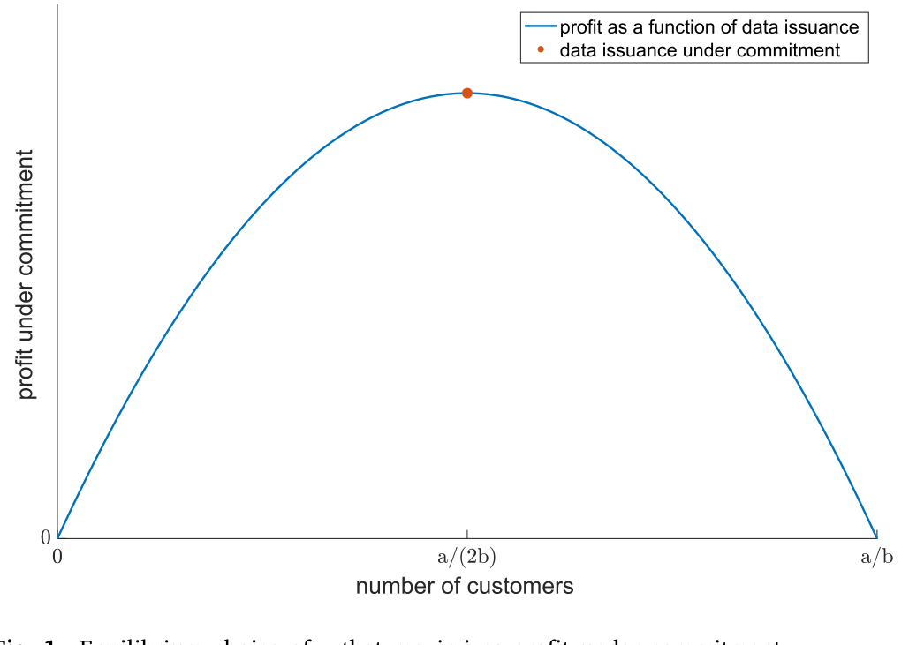
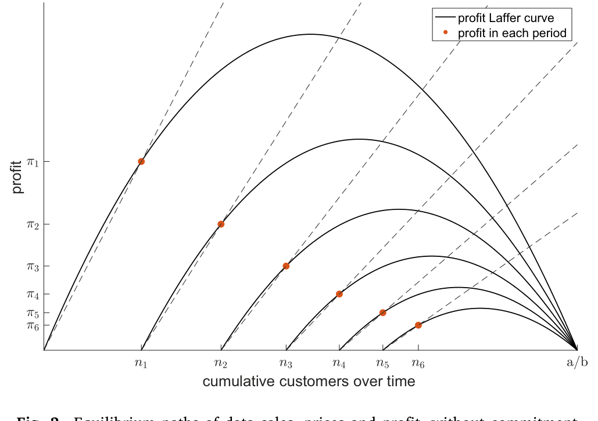
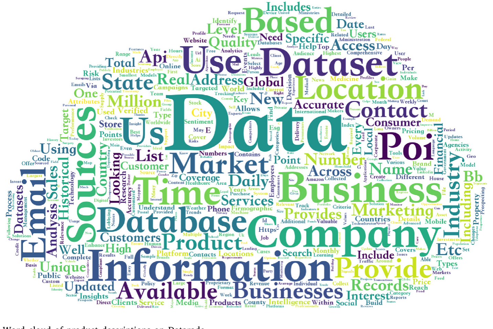
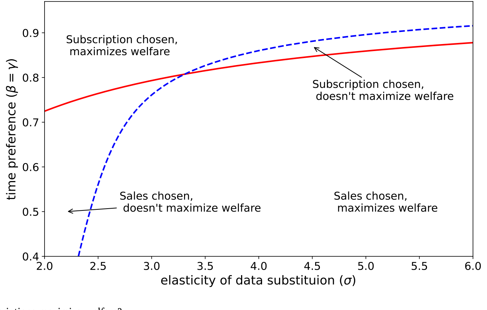
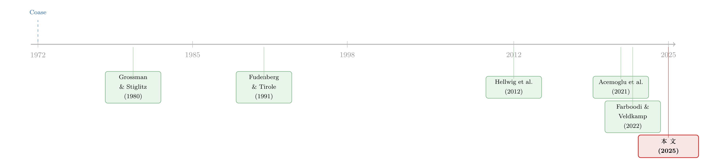

数据卖一次，就稀释一次：当垄断者的对手，是明天的自己
本文读的是 Liu, Ma & Veldkamp (2025, JFE)：一个数据集只此一家、复制成本几乎为零的「数据垄断者」，看起来该是天底下最赚钱的生意；可论文用一个动态模型证明，正因为卖家无法承诺以后不再卖，它其实在和「明天的自己」打价格战，市场势力被自己稀释得所剩无几。真正能把势力捞回来的，不是涨价，而是订阅——于是「卖断还是订阅」这件看似琐碎的合约选择，反而成了衡量数据市场势力的那把尺子。
1 一个反直觉的开场
先想一个问题。假如你手里攥着一份独一无二的数据集——别人没有，你也不愁复制成本（多卖一份的边际成本几乎是零）——你是不是一个标准的、可以为所欲为的垄断者？
直觉会斩钉截铁地说：是。经济学家和监管者也是这么担心的。数字经济里最让人焦虑的一件事，就是「数据天然是自然垄断」：固定成本巨大、复制免费，于是赢家通吃，垄断租金滚滚而来。欧盟那份《非个人数据自由流动条例》（Regulation EU 2018/1807）里，白纸黑字写着要防范数据市场里的「竞争扭曲」。
但这里藏着一个测量上的尴尬。传统上我们用加成率 (markup)——价格高出边际成本多少——来度量市场势力。可数据产品的边际成本是零，加成率是无穷大。按这把尺子，每一个数据卖家都是「无穷垄断」。这显然荒唐。所以问题不是「数据卖家有没有市场势力」，而是：在一个边际成本为零、人人都对自己那份数据握有垄断的市场里，我们到底该去找什么，才能看出谁真有定价权？
这正是 Liu, Ma & Veldkamp 这篇论文要回答的。他们的答案分两步走：先用一个理论模型告诉你「该去看什么指标」，再手工爬下一个真实的数据交易市场，去看那个指标。
2 故事的核心：你在和明天的自己竞争
接着，一个自然的问题是：垄断者为什么会管不住自己的市场势力？
论文的模型里有两个关键设定，缺一不可。
第一，信息是战略替代品 (strategic substitutability)。 这个想法老得很，可以一路追到 Grossman and Stiglitz (1980)：别人也知道的信息，对你就不值钱了。在这篇论文里，它被压成一个极简的产品市场——两家厂商生产同一种商品、做 Bertrand 价格竞争，谁手上有数据，谁的边际成本就更低，就能在对手身上赚到钱；可一旦两家都买了同一份数据，成本又拉平了，利润重新归零。于是每个买家对数据的支付意愿，都随着「还有多少别人也拿到了这份数据」而下降。
第二，卖家无法承诺 (limited commitment)。 这是全文的命门。卖家今天可以拍着胸脯说「我只卖给你一家」，但明天呢？把数据换个名字、做几个变量的线性组合、甚至掺一点点噪声，信息含量几乎不变，可你很难用合约去证明「这是同一份数据」并阻止它再被卖出去。所以卖家做不到承诺「以后不再卖」。
然后，把这两点合在一起，魔法（或者说诅咒）就出现了：一个理性的买家，今天在估算「这份数据值多少钱」时，会预期到卖家明天、后天还会继续往外卖，把数据稀释掉。预期到了，他今天的支付意愿就先打了折。卖家不是在和别的卖家竞争，它是在和明天的自己竞争。 这就是经典的 Coase (1972) 耐用品猜想在数据上的翻版——一个不能承诺不降价的耐用品垄断者，会被迫和未来的自己打价格战，当买家足够有耐心时，它甚至一分租金都赚不到（Fudenberg and Tirole, 1991, 第 10 章）。
但真正关键的一步在于：论文给这个老问题加了三样新东西。其一，把数据接到「半耐用品」上——信息会随世界状态变化而折旧，旧信息越来越不值钱；其二，引入买家之间的战略替代——卖家不只是在和自己更低的未来价格竞争，它还因为「管不住自己卖给别人」而受损；其三，把这股力量在真实的数据市场里量出来。
（关于「先把东西卖给一个中间商、用承诺去修好一个崩坏的市场」这条线，可参见《承诺去交易：为什么「先卖给中间商」反而能治好柠檬市场》；而「把信息卖给你的对手会发生什么」，则与《把信息卖给你的对手：证券借贷里那场无声的博弈》是同一种张力。）
3 模型：把「稀释」一步步推出来
这是一篇模型论文，核心的张力全在推导里，值得一步步走一遍。
消费者与厂商。 时间离散，\(t=-1,0,1,2,\dots\)。代表性消费者对一个连续统的商品有偏好：
$$ U=\sum_{t=0}^{\infty}\beta^{t}u_t,\qquad u_t=\int_0^1\Big(\frac{\sigma}{\sigma-1}\,q_{it}^{\frac{\sigma-1}{\sigma}}-p_{it}q_{it}\Big)\,di, $$
其中 \(\sigma>1\) 是商品间的替代弹性。对每种商品都有两家厂商被随机配对、做 Bertrand 竞争。没有数据的厂商边际成本 \(c=1\)；买了数据的厂商能把成本降到 \(c=1/z\)，这里 \(z>1\) 是数据质量。
对效用关于 \(q_i\) 求一阶条件，得到需求曲线 \(q_i=p_i^{-\sigma}\)。当一家有数据、对手没有时，有数据的厂商收取价格 \(p_d=\dfrac{\sigma}{(\sigma-1)z}\)，对自己的成本 \(1/z\) 形成 \(\dfrac{\sigma}{\sigma-1}\) 的加成。
一份数据，一期值多少。 关键在于「战略替代」：只有在「我有、对手没有」这一种配型里厂商才赚钱；两家都有或都没有时，对称竞争把利润磨成零。设 \(n\) 是这期里拥有数据的厂商测度（总测度为 2），那么一份数据的一期期望价值是
$$ \pi(n;z)=\frac{1}{\sigma}\Big(\frac{z(\sigma-1)}{\sigma}\Big)^{\sigma-1}\Big(1-\frac{n}{2}\Big).\tag{2} $$
注意那个 \(\big(1-\tfrac{n}{2}\big)\) 项——拿到数据的人越多，每个人手里这份数据就越不值钱。这就是「稀释」的数学形态。
为了简化，定义经过单调变换的数据质量 \(x\equiv\big(\tfrac{z(\sigma-1)}{\sigma}\big)^{\sigma-1}\)，再令 \(a\equiv 1/\sigma\)、\(b=a/2\)，则每期利润可以写得干净利落：
$$ \pi(n;x)=x\,(a-bn).\tag{3} $$
它关于 \(x\)（质量）递增、关于 \(n\)（卖出的份数）递减——后者正是市场势力被稀释的引擎。
承诺解：一条数据版的拉弗曲线。 先看一个理想情形：卖家在选定质量后，能承诺每期只卖 \(n\) 份。那它在每期解 \(\max_n\; n\cdot\pi(n;x)\)，即「每份的支付意愿 \(\times\) 份数」。一阶条件 \(x(a-2bn)=0\) 给出
$$ n^{*}=\frac{a}{2b}=1. $$
这条曲线很有意思：卖 \(0\) 份没收入；卖到 \(n=a/b=2\) 份时，每份的价值被稀释到零，总收入又是零；峰值恰好落在正中间 \(n=1\)。这和公共财政里那条「税率—税收」的拉弗曲线一模一样——卖太少赚不到，卖太多把价格压垮。承诺下，卖家的事前价值是
$$ V=\max_{x,n}\;\frac{n\cdot\pi(n;x)}{1-\max(\beta,\gamma)}-F(x),\tag{4} $$
其中 \(F(x)=\tfrac{1}{2}(x-1)^2\) 是一次性的质量投资成本，\(\gamma\) 是卖家的折现率。

Figure 1: Equilibrium choice of 𝑛 that maximizes profit under commitment
无承诺解：稀释如何吃掉势力。 现在把「承诺」这根拐杖抽走。卖家在每期重新优化，状态是「已卖出的累计份数 \(n\)」和质量 \(x\)。买家不是傻子——他今天愿意付的钱，等于他对未来整条销售路径的理性预期下、这份数据带给他的折现利润之和：
这条式子把全文的张力浓缩成一行：卖家想多卖（眼前收入高），但每多卖一份，都会通过 \(\pi(n_\tau;x)\) 这一项压低所有人今天的支付意愿。卖家无法承诺停手，买家也料到他不会停手，于是均衡里价格被一路压低——和耐用品垄断者被迫和未来的自己价格战，是同一个 Coase 逻辑。结果是：即便握有「独此一家」的极端垄断，卖家也榨不出多少租金。所以论文的政策结论相当反直觉——对数据市场的反垄断，应当更克制；该担心的不是数据被高价垄断，而是数据被供给不足。

Figure 2: Equilibrium paths of data sales, prices and profit, without commitment
4 反转：订阅，把势力捞回来
到这里故事还差最后一块。如果无承诺让卖家这么憋屈，现实里的数据商怎么活？
于是反转出现了：把「卖断」换成「订阅 (subscription)」。卖断是一锤子买卖，买家拿到永久使用权，卖家事后再卖只会稀释存量买家手里的价值——这正是承诺问题的温床。订阅则不同：买家每期付费、按期取用数据，卖家事先花一笔固定成本 \(\eta\) 搭好订阅的基础设施。订阅把「使用权」做成了会过期的东西，等于变相恢复了对未来供给的控制——它修好了承诺问题，让卖家把因为无法承诺而丢掉的收入，重新捞回一大块。
那既然订阅这么好，为什么还有人卖断？模型干净地给出三个理由，让订阅变得不划算：
- 财务约束 (financial constraints)。 卖断能在企业生命周期早期一次性带来大量现金。一个等钱用的卖家，会为了眼前的流动性而牺牲长期的租金。
- 市场太小。 当潜在买家本就寥寥，未来「再卖出去稀释」的空间也小，承诺问题不严重，那卖断的损失就有限——小众、专门的数据，一锤子卖掉也无妨。
- 数据折旧快。 信息掉价越快，「以后还能再卖」这件事本就不值钱，订阅的优势随之缩水。
这就把一个抽象的承诺模型，翻译成了一组可观测、可检验的预测：订阅 ⟺ 强市场势力；卖断则更可能出现在「财务受约束、市场小、折旧快」的卖家身上。
5 数据与证据：去 Datarade 上数份额
理论说「去看卖断 vs. 订阅的占比和模式」，论文就真的去看了。
他们手工爬下了 Datarade——最大的在线数据交易市场之一——上 3,000+ 个数据产品，再把这些卖家匹配到公司层面的特征：用 Crunchbase、PitchBook、Compustat、CRSP 拿背景与融资历史，用 EDGAR 的 10-K 文本加上 Datarade 上的产品描述，去刻画它们所在市场的样子。
最扎眼的描述性事实是：64% 的数据产品提供「一次性付费买断」的选项，但超过 80% 提供订阅式付费（两者加起来超过 100%，因为很多卖家同时给好几种购买方式）。换句话说，至少一半的数据商，都具备相当强的攫取租金的能力——这与「数据垄断者其实势力孱弱」的悲观直觉，恰好形成张力：订阅的普遍存在，说明市场势力并没有被承诺问题彻底吃光。

Figure 4: Word cloud of product descriptions on Datarade
接着是把模型预测一条条对上去：
- 生命周期。 卖家选择卖断还是订阅，与它的年龄、拿过的 VC 轮数、累计融资额显著相关。越老、越不差钱的卖家，越倾向用订阅去攫取剩余——这正对应「财务约束 → 卖断」那条预测。
- 市场规模。 他们用一个巧办法度量「这份数据的市场有多大」：把数据描述的文本与全体 10-K 报告做相似度匹配，找出最相关的行业，再数有多少个相关行业。结果是——市场规模越大，越倾向订阅；越小，越倾向卖断，与模型一致。
这里要诚实：本文截断的正文只给到描述性比例（64%、80%、3,000+）和这些相关关系的方向，具体回归系数与 t 值在被截断的表格里，我没有把握逐一引用，因此不在这里编造数字。读者若要复现，应回到原文的 Table 1–6。
6 福利：订阅不只是卖家的胜利
最后一层，论文问了一个更大的问题：订阅对谁更好？
很容易以为「订阅 = 卖家把消费者的剩余多榨走一点 = 对社会更坏」。但模型给出的答案恰恰相反：订阅对消费者更好。原因在于——如果数据卖家赚不到任何垄断租金，它当初就没有动力去做一份高质量的数据（回想 \(F(x)\) 那笔事前投资）。租金不是凭空的恶，它是「把好数据生产出来」的激励来源。订阅维持了这份激励，于是消费者最终拿到的是更高质量的数据。这也把论文推向一个更尖锐的政策判断：「市场势力本身就该被消灭」这个念头，是可疑的；垄断租金的存在，并不必然意味着对消费者不利的结局。

Figure 5: Do data sales or data subscriptions maximize welfare?
（关于「数据让定价更准，到底是谁的福利变好、谁的钱包变薄」，可对照《数据让定价更准，谁的钱包先变薄？——把「信息」翻译成福利的一道算术》，那是信用市场里同一类福利权衡的另一个版本。）
7 文献脉络
把这篇论文放回它的谱系里，会看得更清楚。
最上游是 Coase (1972) 的耐用品猜想：一个不能承诺不降价的垄断者，被迫和未来的自己竞争——这套动态承诺的逻辑后来被 Fudenberg and Tirole (1991) 写进了教科书。另一条上游是 Grossman and Stiglitz (1980)：信息是战略替代品，别人知道的信息对你就贬值；Hellwig et al. (2012) 进一步证明，在「行动是战略替代」的绝大多数环境里，信息也必然是战略替代。
接着是「信息销售」这条静态文献：Admati and Pfleiderer (1986, 1990) 问卖家该不该个性化数据、该不该卖成一项服务，Bergemann and Morris (2013)、Bergemann et al. (2018)、Yang (2022) 研究信息共享与「数据菜单」的最优设计——但它们大多是静态的，错过了本文最核心的那股动态张力。再往近看是「数据经济」这条更偏宏观/产业的文献：Jones and Tonetti (2020)、Cong et al. (2021)、Farboodi and Veldkamp (2022) 建起了数据经济的模型，但不含数据市场里的市场势力；Acemoglu et al. (2021) 与 Kirpalani and Philippon (2020) 触及效率与势力，却没人处理「卖家自己的动态承诺问题」。
本文恰好坐在这三条线的交汇点：把 Coase 的动态承诺、Grossman–Stiglitz 的战略替代，和数据经济的产业关切焊在一起，并第一次把这股「自我稀释」的力量在真实市场里量了出来。它与「债务稀释/信息泄露」（Brunnermeier and Oehmke, 2013；Green and Liu, 2021；DeMarzo and He, 2021）形似而神不同：数据可近零成本复制、会折旧、还能做成订阅——这三点是债务没有的。

8 评论与延伸（Q&A + 研究方向）
(a) 几个可能的疑问
Q：加成率为什么就不能用来衡量数据市场的势力？
因为数据多卖一份的边际成本几乎是零，价格除以边际成本是无穷大，于是每个数据卖家的加成率都是无穷——这把尺子把所有人都标成「极端垄断」，毫无区分度。论文的贡献正是：与其量加成率，不如去看合约形态（卖断 vs. 订阅），因为是「能否承诺」而非「价格高低」决定了真实势力。
Q：「无法承诺」凭什么是单边的？买家也可能违约转卖啊。
论文坦承这是个张力，并给了一个集体行动的解释：一个卖家面对许多买家。若某买家违约转卖，卖家有强烈动机去起诉；可若是卖家违约多卖，每个买家都更想「搭便车」等别人去告——合约执行成本不对称，于是承诺事实上是单边的。这是假设，不是定理，算本文一个可质疑的软肋。
Q：数据明明会过时，怎么能算「耐用品」？
论文在第 1.7 节专门讨论了折旧。关键在于：即便数据会折旧，「动态互补」——我现在想学、而别人以后才学的数据——仍然让数据的价值随时间下降。折旧改变的是稀释的速度，不改变稀释这件事的存在；而且折旧快本身就是「偏好卖断」的预测之一。
Q：如果数据是战略互补而非替代呢（比如投机性攻击、抢跑）？
论文明确承认这种情形存在：在投机攻击、价格设定这类场景里，越多人拿到数据、数据反而越值钱。那时卖家「无法承诺」的代价就小得多——因为多卖几份不再稀释、反而增值。所以本文的结论是有条件的，它刻画的是「替代占主导」的那一大类数据市场。
Q：订阅对消费者更好，这个结论稳健吗？会不会只是卖家多赚钱的话术？
机制是实打实的：没有租金就没有事前投资 \(F(x)\) 去生产高质量数据。订阅通过修复承诺、保住租金，从而保住了「做好数据」的激励，消费者最终拿到更高质量的数据。这与「订阅 = 多榨消费者」的直觉相反，也是论文最值得玩味的福利反转。但它依赖模型里「质量靠一次性投资内生决定」的设定，换一个质量生成过程，结论强度可能变。
Q：实证能不能反过来——是不是「成熟大公司」本来就爱订阅，跟承诺无关？
这是识别上最该担心的内生性。年龄、融资轮数、市场规模都可能通过别的渠道同时影响合约选择，本文给的是相关关系而非因果。要把「承诺机制」从「公司成熟度的混杂」里干净地剥出来，需要外生冲击（见下方研究方向），目前这一步还没有走到。
(b) 几个可能的研究问题与提案
1. 金融数据供应商的合约形态，能否预测其在信用市场里的定价权？
【经济故事】Bloomberg、ICE、Markit 这类卖给债券投资者的数据商，几乎清一色用订阅。按本文逻辑，订阅是强势力的信号。那么「订阅依赖度高」的数据投入，是否对应着更高的数据费用加成、以及下游债券投资者更被动的议价地位？ 【可行性】中。终端/数据费用数据零散，但可从基金费用披露、券商支出与供应商财报间接拼出；识别需要一个改变某类数据「可订阅性」的外生事件（如监管要求数据可移植）。
2. 外资债券持有人是否更依赖订阅式数据，并由此影响其持仓与流动性贡献？
【经济故事】外资机构进入美国公司债市场，往往要先买当地数据来克服信息劣势。若这些数据多为订阅、且具强势力，外资的「信息成本」就被卖家攫取，进而影响它们的进入节奏与做市/持有行为，最终传导到公司债流动性。 【可行性】中（与我自己关于外资与公司债流动性的研究天然衔接）。可用 13F/TIC 持仓数据 + Datarade 式的数据供应商画像匹配，识别上较难，需要数据供应商进入/退出某区域市场的时点变化。
3. 数据折旧速度的外生变化，如何改变「卖断 ⟶ 订阅」的切换？
【经济故事】本文预测折旧越快越偏向卖断。可找一些让数据突然「保质期变短」的冲击（如某行业进入高波动期、或监管让旧数据失效），看同一批卖家是否系统性地从订阅转向卖断。这能把「折旧 → 合约」这条预测做成准实验。 【可行性】中偏低。难点在于度量「数据折旧速度」并找到外生冲击；Datarade 的横截面够，但时间序列与冲击的对齐是硬骨头。
4. 把「财务约束 → 卖断」做成因果。
【经济故事】本文用年龄/融资额做相关性。若能找到外生收紧数据商融资的冲击（如某轮信贷紧缩、某地 VC 退潮），就能检验「被迫缺钱的卖家是否更可能选一次性买断换现金」。这直接呼应 Whited and Wu (2006) 这条财务约束度量的文献。 【可行性】中。需要把数据商匹配到可识别融资冲击的样本；私有公司居多，融资数据覆盖是主要障碍。
9 我的判断
这篇论文最漂亮的地方，是把一个「测量难题」翻译成了一个「合约观测」：当加成率因为零边际成本而失效时，它告诉你去看卖断 vs. 订阅——这是一个又干净、又可爬取、又有理论根基的代理变量。模型本身极简却抓住了要害：垄断者真正的对手是明天的自己，而订阅是它给自己重新戴上的承诺枷锁。三条「偏好卖断」的预测（财务约束、市场小、折旧快）逻辑自洽，且都能在 Datarade 上找到方向一致的证据。政策含义也足够大胆——对数据反垄断应更克制，因为该怕的是数据供给不足，而非租金过高。
对识别，我有两点担心。其一，所有公司层面的实证都是相关关系：年龄、融资、市场规模与合约选择之间，缺一个外生冲击把「承诺机制」从「公司成熟度混杂」里干净剥离，因果链条尚未闭合。其二，模型把势力流失的强度系于「单边承诺」这个假设，而那个「集体行动让承诺单边」的故事更像是合理化，而非被验证过的事实——如果买家转卖在某些市场其实可行，势力结构会很不一样。
后续我最想看到的，是把那把「订阅 = 势力」的尺子，从一般数据市场搬进信用与公司债这种我们更熟的市场：金融数据供应商的合约形态，能否预测下游投资者被攫取的信息租金、乃至债券流动性的差异？如果能，那这篇论文给的就不只是一个数据市场的洞见，而是一种衡量「信息中介势力」的通用方法论。
参考文献
- Acemoglu, D., Makhdoumi, A., Malekian, A., Ozdaglar, A. (2021). Too much data: Prices and inefficiencies in data markets. American Economic Journal: Microeconomics (forthcoming).
- Coase, R. H. (1972). Durability and monopoly. Journal of Law and Economics 15(1), 143–149.
- Fudenberg, D., Tirole, J. (1991). Game Theory, Chapter 10. MIT Press.
- Grossman, S. J., Stiglitz, J. E. (1980). On the impossibility of informationally efficient markets. American Economic Review 70(3), 393–408.
- Hellwig, C., Kohls, S., Veldkamp, L. (2012). Information choice technologies. American Economic Review 102(3), 35–40.
- Liu, E., Ma, S., Veldkamp, L. (2025). Data sales and data dilution. Journal of Financial Economics 169, 104053.
- Segal, I. (1999). Contracting with externalities. Quarterly Journal of Economics 114(2), 337–388.
- Whited, T., Wu, G. (2006). Financial constraints risk. Review of Financial Studies 19(2), 531–559.
- Yang, K. (2022). Selling consumer data for profit: Optimal market-segmentation design and its consequences. American Economic Review 112(4), 1364–1393.